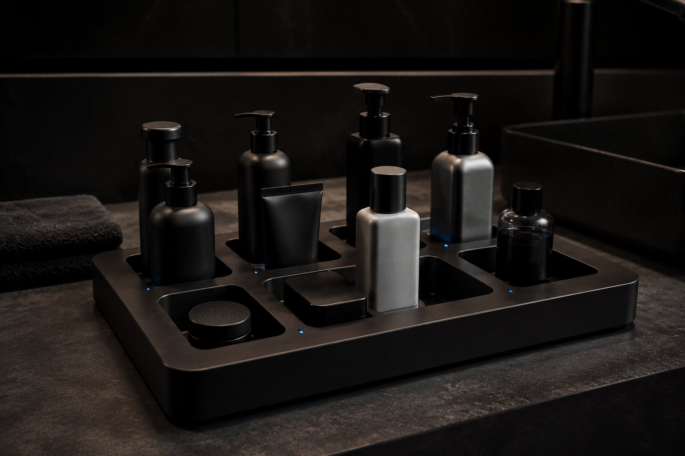
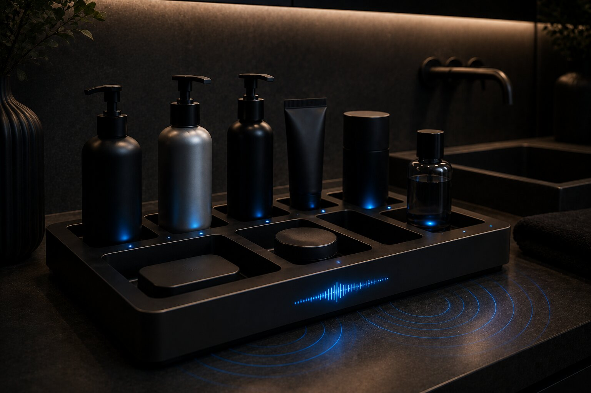
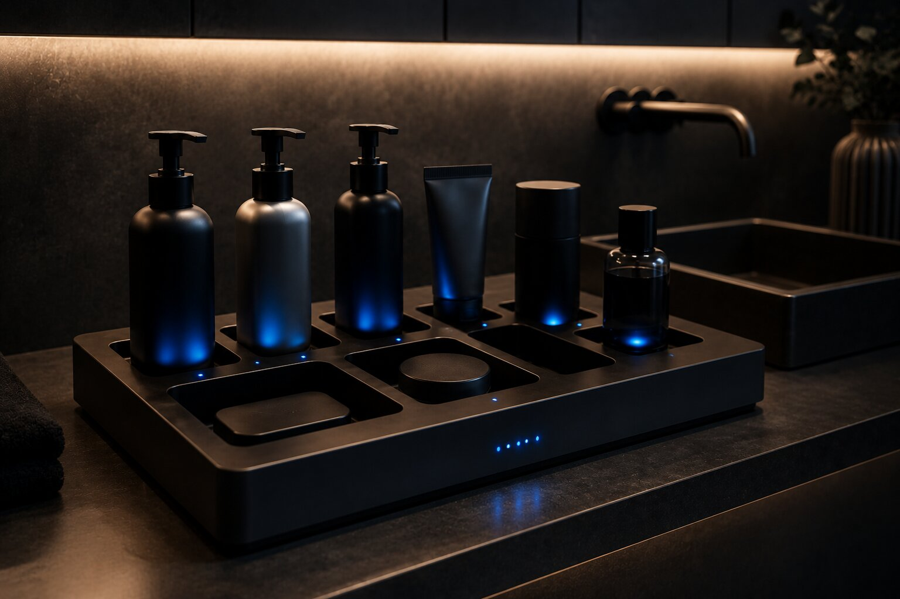
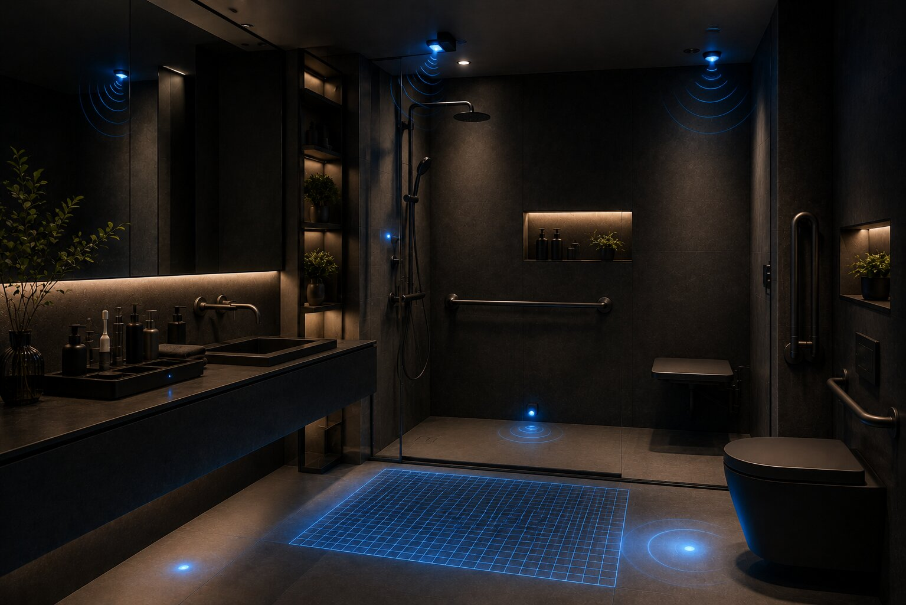
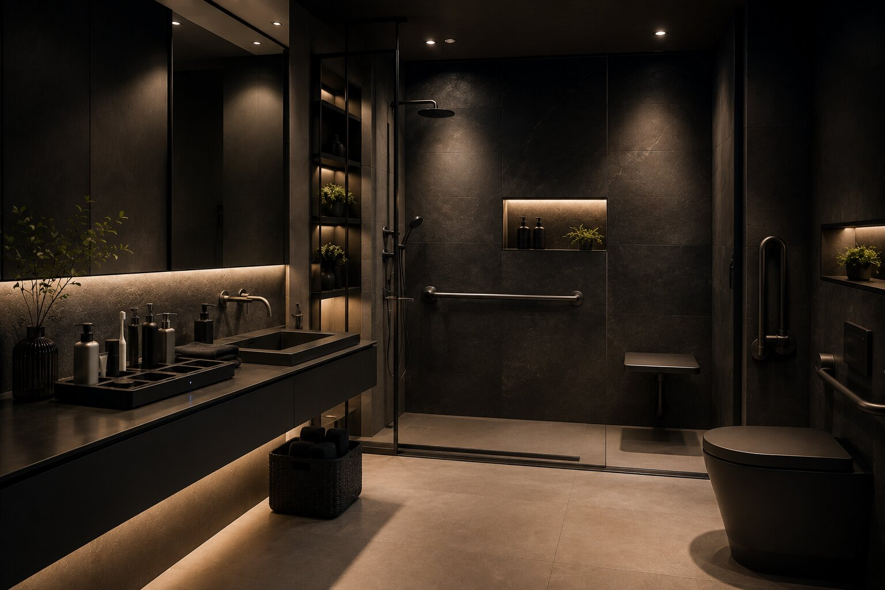

01
Weighted Product Detection
Integrated load-cell sensors detect when a hygiene product is placed into or removed from the docking platform.
Anchor-Sense is a hybrid smart bathroom assistant designed to help visually impaired individuals safely organize, monitor, and use hygiene products independently through weighted smart docking, audio guidance, product-level monitoring, and real-time safety sensing.
Anchor-Sense uses a weighted docking grid to monitor product placement, detect removal, track remaining quantity, and provide accessible feedback in real time without requiring visually guided interaction.

Integrated load-cell sensors detect when a hygiene product is placed into or removed from the docking platform.

Voice guidance and tactile vibration provide clear real-time confirmation and product-level awareness.

The system continuously tracks product quantity and alerts users when hygiene products are running low.

Integrated motion sensing detects abnormal impact and activates local emergency alerts instantly.
Anchor-Sense combines accessible interaction design with calm industrial aesthetics to create an assistive system that feels intuitive, modern, and emotionally reassuring rather than clinical or institutional.

Designed to reduce dependency and support confidence in personal care routines.
Low-friction multisensory cues improve clarity, usability, and emotional reassurance.
Continuous sensing helps identify potential risk and supports safer independent use.